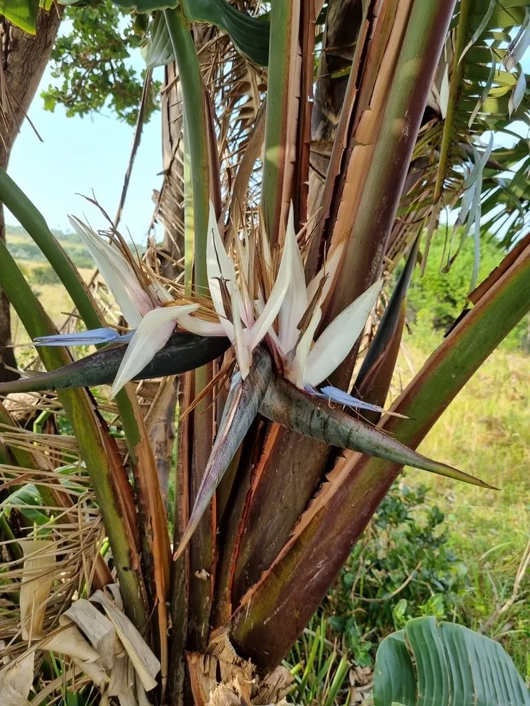

花卉与草本 · 植物界
大鹤望兰 Strelitzia nicolai

鹤望兰科鹤望兰属多年生草本，植株高大、花白蓝相间，形似巨鹤，是热带园林中雄伟高大的观花植物。
- 分类
- 门被子植物门纲木兰纲目姜目科鹤望兰科属鹤望兰属
- 栖息环境
- 南非东部沿海亚热带林缘，喜温暖湿润、阳光充足
- 地理分布
- 原产南非东部；中国华南及世界热带地区栽培
- 保护级别
- IUCN 暂无评估；栽培广泛，野生种群未受明显威胁
物种志
大鹤望兰为多年生常绿草本，高 4–8 米，具粗壮根状茎，假茎由叶鞘层层包裹，形似小树。叶片大，长 1–2 米，长椭圆形，近似芭蕉叶，簇生于茎顶。花序从叶腋抽出，总苞片舟形，花冠由白色萼片与蓝色花瓣组成，长 20 厘米，形似巨鹤；蒴果三棱形，种子黑色。
本种原产南非东部沿海，喜温暖湿润、阳光充足的环境，在中国华南常作庭园观花与行道景观。它植株高大、花形雄伟，是鹤望兰属中体型最大的种类，常被误认为香蕉树。大鹤望兰不耐寒，北方需温室栽培；生长迅速，需充足光照与肥沃土壤。其花蜜丰富，在原产地由太阳鸟传粉；叶片可作饲料，也可用于编织。
形态与习性
- 株高4–8 米，假茎粗壮似小树
- 花期全年，盛花期 5–10 月
- 花形白色萼片配蓝色花瓣，形似巨鹤
- 光照喜光，每天需充足直射光
- 水分喜湿润，忌积水
- 土壤深厚肥沃、排水良好的壤土
- 主要用途庭园观赏、行道景观与切花
趣味知识
- 大鹤望兰能长到 8 米高，远看像一棵小香蕉树，其实它是草本植物。
- 它的花白色萼片配蓝色花瓣，比鹤望兰更大、更显雄伟。
- 大鹤望兰原产南非东部沿海，常成片生长在海边的灌丛中。
- 它的叶片宽大坚韧，当地居民曾用来编织篮子和遮阳。